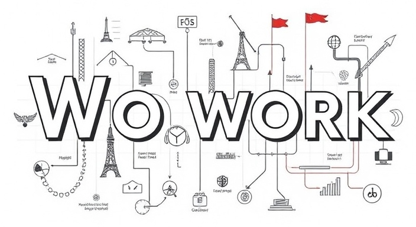

Skills Summary
1. Configuring and maintaining network switches, routers, and firewalls to ensure optimal network performance.
2. Troubleshooting and resolving hardware and software issues across desktops, servers, and mobile devices.
3. Managing and securing IT infrastructure, including servers, database management, data backups and disaster recovery planning.
4. Deploying and supporting enterprise-level software applications, ensuring smooth business operations.
5. Collaborating with cross-functional teams to implement IT projects within set timelines and budgets.
Principles

Strong Work Ethic: "I consistently demonstrate dedication and discipline in my work, taking pride in completing tasks efficiently and with attention to detail. "
Commitment to Excellence: "I believe in delivering the highest quality in everything I do, ensuring that my work reflects a commitment to excellence. "
Dependability and Accountability: "I understand the importance of reliability in the tech industry."
Problem-Solving and Continuous Learning: "My work ethic is fueled by a passion for problem-solving and a desire to stay updated with industry trends. "